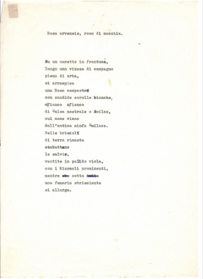
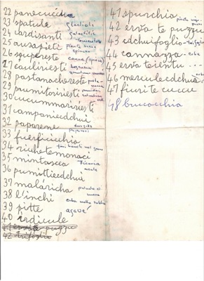
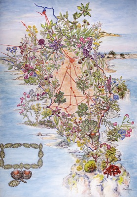
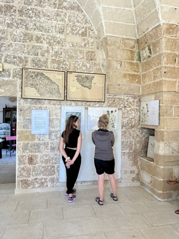
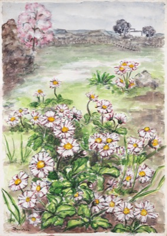
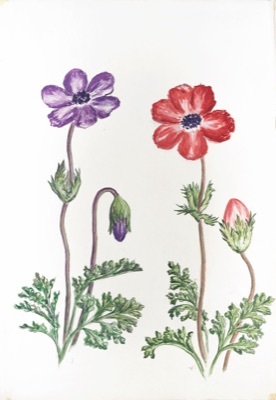

Tutto l'archivio: 41 opere
Togli tutti i filtriNessuna opera corrisponde ai filtri scelti.

Ode alla donna di casa
Scritti › Poesia

Rosa arvensis
Scritti › Poesia


Quaderni Salentini 1989
Media e memorie › Ritaglio stampa



Nomi dialettali delle piante del Salento
Scritti › Appunti

Nomi scientifici e ubicazioni della flora “Da disegnare”
Scritti › Appunti · 2 fogli


Children playing
Opere d'arte › Altre tecniche · tecnica mista



Mappa della flora del Salento
Botanica › Tavola botanica · 6 fogli


Pagina registro opere
Media e memorie › Mostre e registro delle opere

Rauccio 2022
Media e memorie › Evento


Paesaggio con Margheritine
Opere d'arte › Pittura · acquerello

Anemone Coronaria
Opere d'arte › Pittura · acquerello

Disegno botanico di Anemone Coronaria
Botanica › Erbario disegnato

Paesaggio con Silene Conica
Opere d'arte › Pittura · acquerello

Disegno botanico di Silene Conica
Botanica › Erbario disegnato